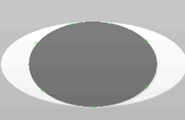
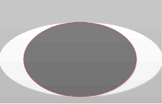

对输入的点集进行椭圆拟合，得到最匹配的椭圆。其应用效果如图1所示。
 
| 分类 | 参数名称 | 参数描述 |
|---|---|---|
| 属性窗口 | 拟合方法 | 拟合方法分为2种，代数距离和几何距离。 |
| 启用全局最优拟合 | 是否启用全局最优拟合，默认为“否”。如果选否，则使用效率优先的拟合方式；如果选是，则使用全局最优拟合。 | |
| 考虑局外点 | 椭圆拟合过程中是否考虑偏离曲线较远的点(局外点)，选择“是”，显示局外点方法和局外点个数参数。 | |
| 局外点方法 | 局外点方法分为3种，Combination(全组合)、Ransac(随机抽样)、Robust(权重)。Robust提供稳定高效的拟合结果，Combination的结果最优但效率极低，Ransac的结果具有随机性。 | |
| 局外点个数 | 不参与椭圆拟合的点个数，局外点个数小于总点数减2。 | |
| 约束角度 | 约束拟合椭圆的角度，取值范围-180°~180°。 | |
| 图像窗口 | 输入图像 | 显示待检测的图像。 |
| 输入点集 | 显示输入点集。 | |
| 数据链 | 输入图像 | 输入图像宽度、高度、像素大小，同图像窗口的输入图像参数。 |
| 输入点集 | 输入拟合的点集，同图像窗口的输入点集参数。 | |
| 高级界面 | 无 | 无 |
| 分类 | 参数名称 | 参数描述 |
|---|---|---|
| 监视窗口 | 输入图像 | 输出图像宽度、高度、像素大小。 |
| 椭圆结果 | 输出拟合椭圆的圆心、半轴长度和角度。 | |
| 拟合点集 | 输出参与拟合椭圆的点集（排除局外点）。 | |
| 均方根误差 | 输出拟合结果的误差，值越小，拟合效果越好。 | |
| 执行结果 | 工具执行结果。 | |
| 执行时间 | 工具执行时间。 | |
| 图像窗口 | 椭圆结果 | 显示椭圆拟合结果，同监视窗口的椭圆结果参数。 |
| 执行结果 | 显示工具执行结果，执行成功显示“OK”，执行失败显示“NG”，同监视窗口的执行结果参数。 | |
| 数据链 | 椭圆结果 | 输出椭圆拟合结果，供后序工具使用，同监视窗口的椭圆结果参数。 |
| 拟合点集 | 输出参与拟合椭圆的点集，供后序工具使用，同监视窗口的拟合点集参数。 |
无
无
参见“\Samples\形状间距及相关点.gvp”。